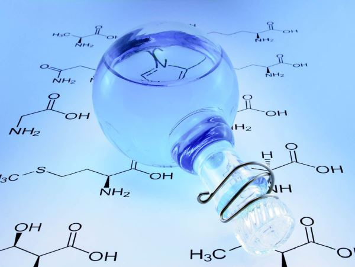
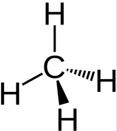
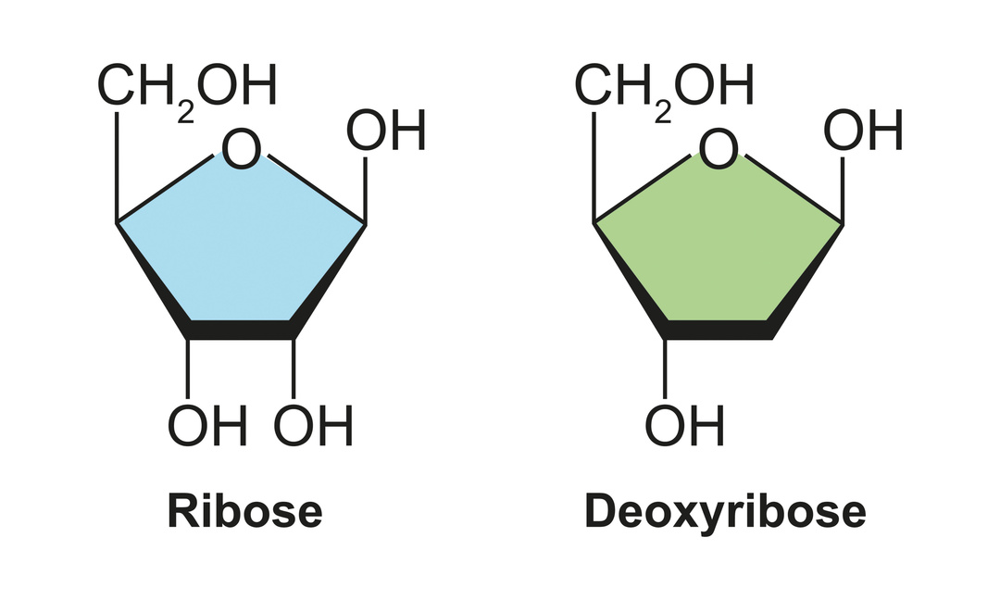
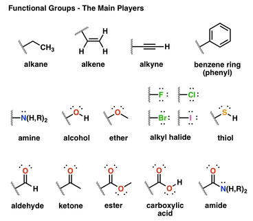
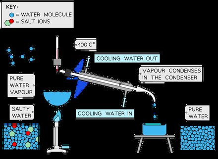
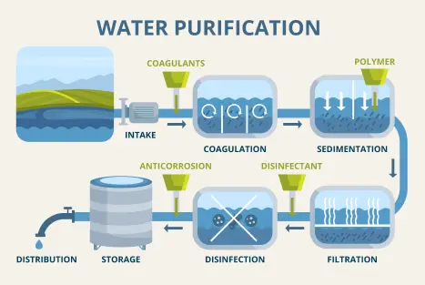

Organic chemistry
| Vietnamese | Hóa học hữu cơ ( ) |
|---|---|
| English | Organic chemistry |
| Pronunciation | /ɔːrˈɡæn.ɪk ˈkem.ə.stri/ |
| Word type | noun (as labelled in the PDFs) |
Topic 1 — Meaning (Vietnamese)
Hóa học hữu cơ là ngành hóa học chuyên nghiên cứu các hợp chất hữu cơ
Meaning (English)
a subdiscipline within chemistry involving the scientific study of the structure, properties, and reactions of organic compounds and organic materials (Hóa học hữu cơ là ngành hóa học chuyên nghiên cứu các hợp chất hữu cơ)
Example
Organic compounds form the basis of all known life and constitute the majority of known chemicals (Các hợp chất hữu cơ tạo nên nền tảng của mọi dạng sống và cấu thành phần lớn các chất hóa học.)
Images from the PDFs











